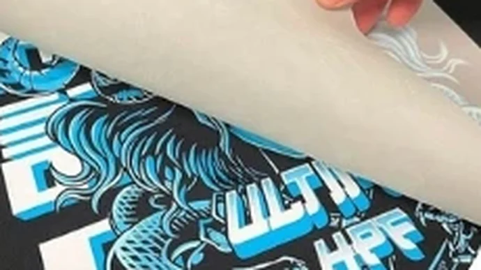
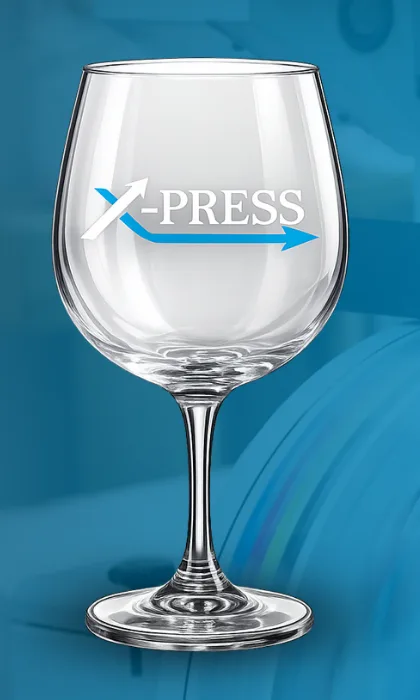
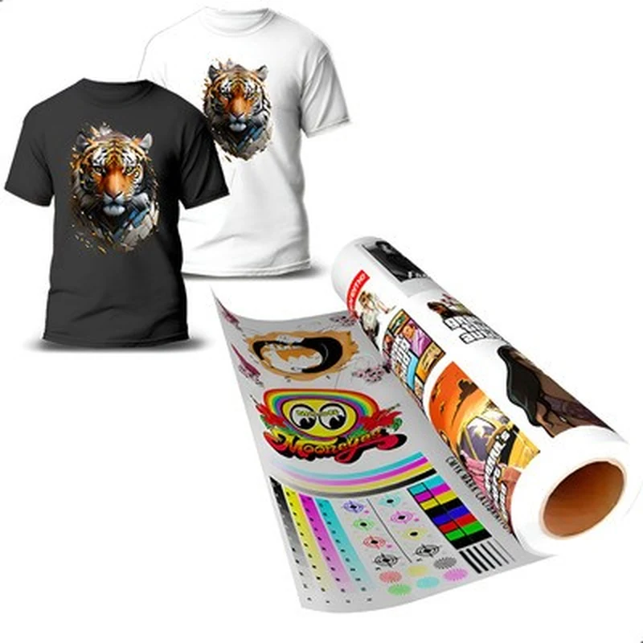
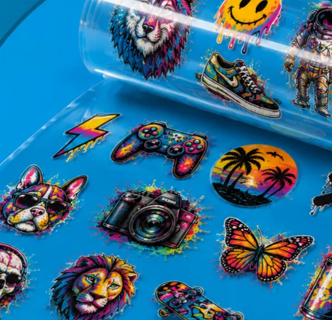
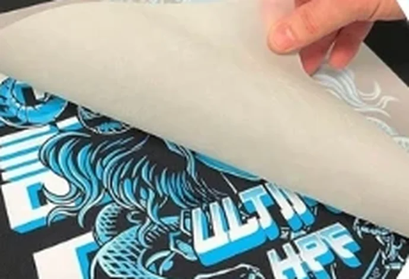

Gráfica em Osasco · Produção em 1 dia útil
Sua arte em tecido ou em vidro.
A Xpress imprime as duas técnicas de transfer digital. Escolha por onde sua arte vai sair e peça o orçamento direto no WhatsApp.
DTF Têxtil
Camiseta, moletom, boné, sacola
Filme termo transfer fixado na prensa quente. Vale para tecido claro e para tecido escuro.

DTF UV
Vidro, acrílico, metal, madeira
Filme adesivo impresso com tinta UV. Você destaca e aplica à mão, sem prensa e sem calor.

DTF Têxtil, ponto a ponto
- Vai em
- Tecido, claro ou escuro: algodão, malha, moletom, boné, sacola.
- Como aplica
- Prensa térmica. A prensagem quente é o que fixa a arte na fibra.
- Do que é feito
- Filme termo transfer com látex e poliamida (TPU).
- Largura
- 58 cm, de 25 cm a 1 metro de comprimento.

DTF UV, ponto a ponto
- Vai em
- Superfície rígida: vidro, acrílico, metal, madeira, plástico. Inclusive curva e transparente.
- Como aplica
- À mão e a frio. Sem prensa, sem calor, sem tempo de cura.
- Do que é feito
- Cinco camadas: verniz, cor CMYK, branco de suporte, adesivo e a sua peça.
- Largura
- 28 cm, de 20 cm a 1 metro de comprimento.

A aplicação
O filme sai. A arte fica.
Você recebe a arte já impressa no filme, no formato que desenhou.
Posiciona na peça e alisa de um lado ao outro.
Destaca o filme por um canto, devagar. No DTF UV acaba aqui: sem prensa, sem calor. No têxtil, a prensa vem antes.


Arraste para destacar
Como pedir
O mesmo caminho para as duas técnicas: arquivo, produção em 1 dia útil, retirada ou envio.
-
Envie a arte
PDF/X-1A, cores em CMYK, imagens a partir de 300 dpi e fontes em curvas. Pantone e RGB precisam ser convertidos antes.
Sem arte pronta? A criação é um serviço opcional, escolhido no fechamento do pedido.
-
A gente imprime
Produção em 1 dia útil, somada ao prazo de entrega. Medida fora do catálogo e volume maior saem por orçamento.
Têxtil e UV saem na mesma casa, no mesmo prazo.
-
Retire ou receba
Retirada no balcão em Osasco, ou Correios em PAC ou SEDEX, com frete calculado no carrinho pelo peso, volume e CEP.
Há também balcões de retirada parceiros em outras cidades.
DTF Têxtil · 58 cm de largura
DTF UV · 28 cm de largura
Dúvidas que travam o pedido
Qual é a diferença entre DTF têxtil e DTF UV?
O DTF têxtil transfere a imagem de um filme para o tecido com prensagem quente, e é o que estampa camiseta, moletom e boné. O DTF UV imprime com tinta UV num filme adesivo para superfície rígida, e vai aplicado à mão, a frio. São dois produtos diferentes, e a Xpress produz os dois.
Em quais materiais cada um vai?
Têxtil: tecidos em geral, claros e escuros. UV: vidro, acrílico, metal, madeira e plástico rígido, inclusive peças curvas como copos, taças e garrafas, e peças transparentes como potes.
Preciso de prensa ou de algum equipamento?
Para o DTF têxtil, sim: a prensa térmica é o que fixa a arte na fibra. Para o DTF UV, não: a aplicação é manual e a frio, basta posicionar, alisar e destacar o filme.
Quais tamanhos vocês produzem?
O DTF têxtil sai em 58 cm de largura, nos comprimentos de 25, 50, 75 e 100 cm. O DTF UV sai em 28 cm de largura, nos comprimentos de 20, 40 e 100 cm, este último vendido como o metro. Outras medidas e volumes maiores saem por orçamento.
Qual é o prazo?
A produção leva 1 dia útil, somada ao prazo de entrega escolhido. Pedidos são embalados e postados em até 5 dias úteis após a confirmação do pagamento; pedidos feitos sexta após as 12h, sábado, domingo ou feriado contam a partir do primeiro dia útil seguinte.
Como meu arquivo precisa chegar?
PDF/X-1A é o formato mais rápido de produzir. Use cores em CMYK, imagens com no mínimo 300 dpi e fontes convertidas em curvas, com textos acima de 7 pontos. Arquivos com cores Pantone ou RGB precisam ser convertidos antes do envio. Sem arte pronta, a criação é um serviço opcional no fechamento do pedido.
Como recebo o pedido?
Retirada no balcão em Osasco, envio pelos Correios em PAC ou SEDEX com frete calculado no carrinho, ou retirada em um dos balcões parceiros.
Manda a arte.
A gente imprime.
Produção em 1 dia útil. Atendimento de segunda a sexta, das 9h às 18h.
Orçamento DTF têxtil Orçamento DTF UV
Cada botão abre uma conversa no WhatsApp com a equipe da Xpress, já dizendo qual impressão você procura.